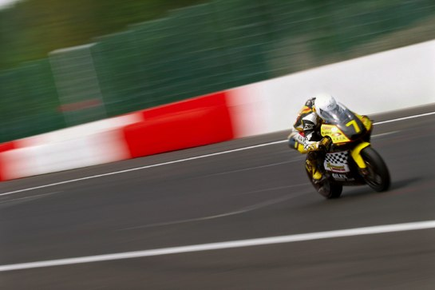
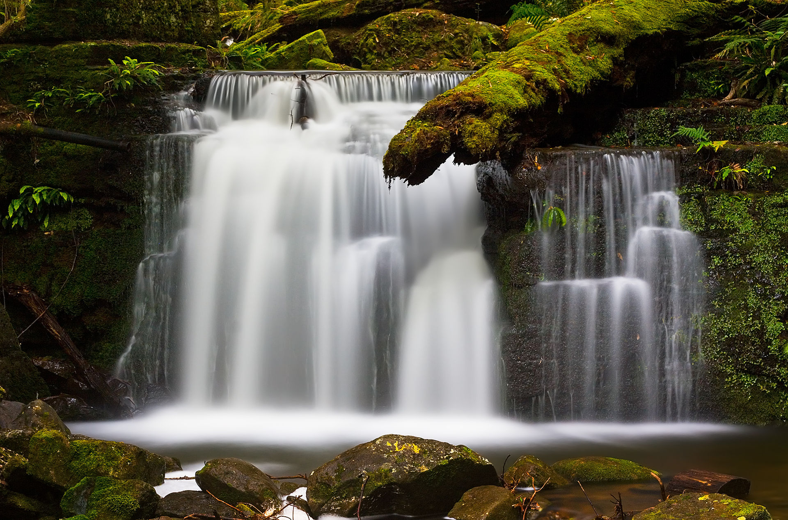
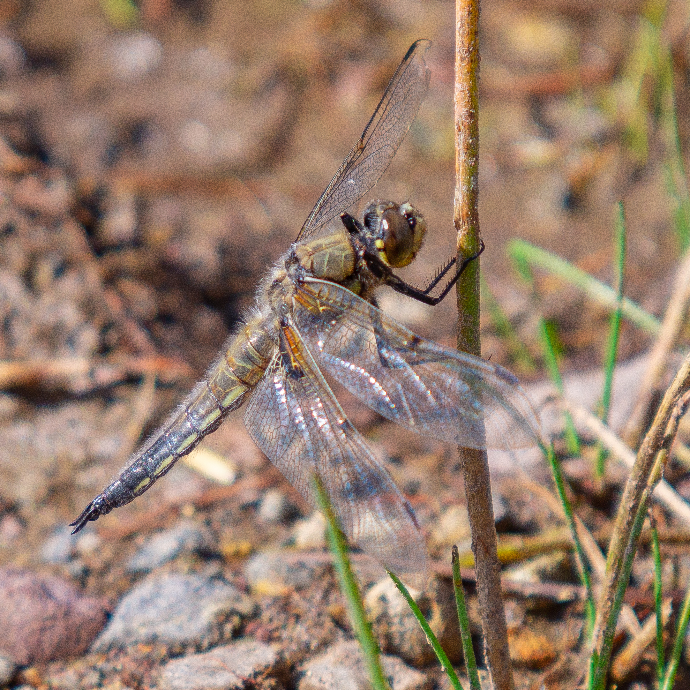

Le flou en photo
Pourquoi le flou ?
Pour beaucoup, une image réussie est synonyme d'image nette. Or, ce n'est pas toujours vrai, le flou en photographie est très utilisé et nous allons voir comment et pourquoi.
Les différents types de flous
Pour comprendre comment utiliser les flous, il faut d'abord les connaître. Voici donc une liste des flous rencontrés en photographie :
-
Le flou de mouvement | flou de bougé/flou cinétique
C'est le flou accidentel que l'on cherche à éviter à tout pris. On le rencontre lorsque le temps d'obturation est trop long par rapport aux mouvements de la caméra. Cependant, toutes les photos avec un flou de mouvement ne sont pas bonnes à jeter, bien au contraire. Une bonne utilisation de celui-ci peut faire de très bonnes photos.
Voilà un exemple de photo qui sans le flou de bougé n'aurait pas du tout exprimé la même sensation de vitesse (plus précisément, ce flou de bougé en arrière plan s'appelle le "filé").
Ici, c'est une utilisation plus artistique du flou cinétique, créé avec une exposition longue grâce à un filtre ND (permettant de réduire la lumière entrant dans l'objectif).
-
Le flou lié au piqué
Ce flou est créé à cause de l'objectif, lorsque celui-ci est de basse qualité. Il n'empêche cependant pas de faire de très belles photos.
-
Le flou de mise au point / lié à la profondeur de champ
Ce flou est influencé par la mise au point ("focus"), qui va déterminer quel objet est net, et quel objet est flou. C'est l'objectif qui le contrôle, et il est bon de savoir que plus il est "zoomé" (longue focale) et plus son diaphragme est ouvert, plus la zone nette sur la photo sera petite (donc un arrière et un avant plan plus flou).

Sur cette image, la libellule est nette, tandis que l'arrière plan est flou. On dit que la profondeur de champ est faible, et cela fait ressortir le sujet par rapport au fond.
Comment utiliser les flous ?
Il n'y a pas de bonne ou de mauvaise manière d'utiliser tel ou tel flou. Maintenant que vous en connaissez les grandes lignes,
c'est à vous d'exploiter ces connaissances, de trouver la bonne situation et d'être créatif ...
Remarque : Il est important de noter que tous les types de flou de sont pas cités sur cette page.
A vous de vous documenter sur la ou les techniques que vous souhaitez exploiter!